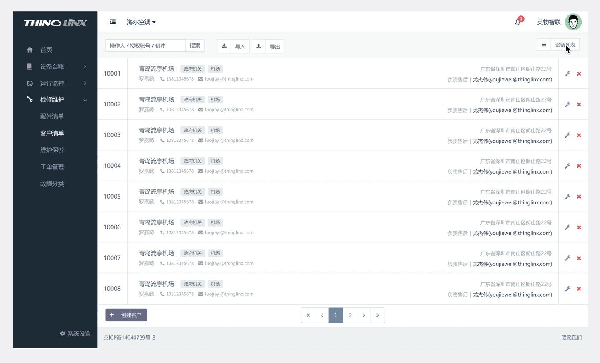

我们平时经常可以在dribbble上看到很多好看的数据表(table)设计，然而这些设计具有一个共同点，那就是数据量比较小，充足的空间和留白让整个界面显得美观。但是在自己的实际工作中，to B产品的数据量往往非常庞大，字段非常多，如何将数据表设计得简洁易用成为了更首要的任务。
我们先随便画一个比较常规的数据表（上图），符合我们所说的数据量大字段多的特点，在当前屏幕尺寸下刚好占满了主要视图区域。如果我们继续分割屏幕区域，继续增加字段呢？比如我们有一个12列的数据表，如果我们按百分比分配列宽，展示出来的效果会是每一个超出宽度的列都自动换行，整个数据表会丑得无法直视。那么，根据以往的经验，我总结出3种改进办法：
增加横向滚动条是最简单的方法。缺点是当用户想要查看每个条目的时候要来回拖动滚动条，操作比较不便。
稍微改进的版本：为数据表增加固定列的设计，类似于Excel中固定单元格的功能（参考Philipp Sporrer的文章Advanced Data Tables in React）
当一张数据表大到超出显示范围的时候，其实我们更应该问自己一个问题：这些信息是否都有必要在第一时间展示给用户？如果答案是否定的，我们可以考虑对信息进行整理。
第一种方法，我们可以将字段设计成可筛选，默认隐藏次要信息，用户可根据需求自行设置：
第二种方法，利用FooTable，将次要列折叠。此方法尤其适合响应式设计。
第2点中我们谈到对信息的整理，区分重要性只是一个最简单的整理方式。只是单纯地把一个庞大的数据表展示给用户，这让我联想到作为数据分析师时整天与Excel打交道的经历，但是把这种设计应用到网页中是不是真的合适呢？以我们自身的产品为例，用户的身份有管理者、工程师、销售人员等等，成分复杂，每个人的需求不尽相同。多数用户在网站上直接查看数据表更多是想直观地获取他想要结论，并非利用网站的数据表进行计算和数据处理。因此，我们其实可以进行一些大胆的改进，抛弃数据表的展现形式，将信息进行更细致的分类、重组，用其他方式展现出来，比如：
欢迎移步我的知乎专栏： 线框仔的日常-复杂数据表的设计方式探究